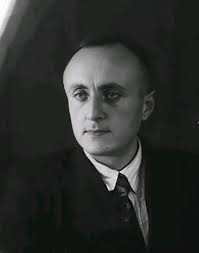
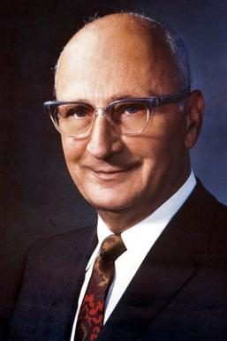
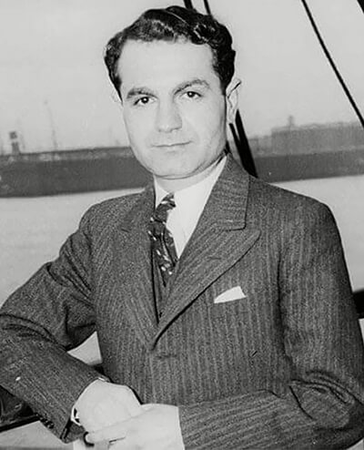

Choose an inventorfrom this list to learn more about them and their invention:
Major Armenian Inventors
Below are several important Armenian inventors and the technologies they helped develop.
-

- Raymond Damadian was an Armenian-American scientist who played a major role in the invention of the Magnetic Resonance Imaging (MRI) scanner. This technology allows doctors to view detailed images inside the human body and detect diseases early.
-
 Hovannes Adamian - Color Television Technology - Hovannes Adamian was an Armenian engineer who helped develop early color television technology. His research on transmitting color images electronically helped make modern television broadcasting possible.
-
 Alex Manoogian - Modern Faucet Design - Alex Manoogian was an Armenian-American inventor who developed the modern single-handle faucet. His design allows users to control water temperature and pressure with one handle and is still widely used today.
-
 Luther George Simjian - Early ATM Technology - Luther George Simjian developed one of the first automatic banking machines, an early form of the ATM. His invention allowed customers to complete banking transactions without a teller and helped inspire modern automated banking.
Conclusion
Armenian inventors have made lasting contributions to medicine, communication, engineering, and banking systems. Their work continues to influence modern life and shows the global impact of Armenian innovation and creativity.